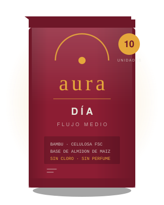
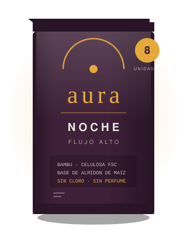
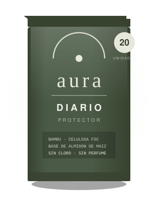

Producto
Tres formatos.
Un solo estándar.
Cambia el largo y cambia la superficie de retención. No cambia la lista de materiales: bambú hilado en la superficie, celulosa de pulpa certificada en el núcleo, base de PLA derivado de almidón de maíz. Sin perfume, sin colorante, sin cloro elemental, sin látex.

Aura Día
| Largo | 240 mm |
|---|---|
| Alas | Sí |
| Superficie | Bambú hilado |
| Núcleo | Celulosa certificada |
| Base | PLA de maíz |
| Envoltorio | Papel kraft |

Aura Noche
| Largo | 320 mm |
|---|---|
| Alas | Sí, con extensión posterior |
| Superficie | Bambú hilado |
| Núcleo | Celulosa certificada |
| Base | PLA de maíz |
| Envoltorio | Papel kraft |

Aura Diario
| Largo | 155 mm |
|---|---|
| Alas | No |
| Superficie | Bambú hilado |
| Núcleo | Celulosa certificada |
| Base | PLA de maíz |
| Envoltorio | Papel kraft |
Distribución exclusiva
Seis puntos,
todos en San Pedro Sula.
Aura no se vende en supermercados. Cada punto de esta lista firmó un acuerdo de exclusividad recíproca, recibió capacitación sobre la composición del producto y sostiene el mismo precio publicado. Las seis zonas no se solapan: dos aliados compitiendo por el mismo radio anularían el sentido del acuerdo. Si un local no aparece acá, no es un punto autorizado.
Barrio Río de Piedras
Farmacia
Zona norte
Avenida Circunvalación
Tienda naturista
Zona Viva
Colonia Trejo
Farmacia
Zona sureste
Colonia Jardines del Valle
Tienda naturista
Zona suroeste
Barrio Guamilito
Farmacia
Centro
Colonia Universidad
Tienda naturista
Zona este
Las direcciones exactas se publican el 1 de septiembre. La lista se actualiza cada vez que cambia, con la fecha del último cambio al pie. La ampliación dentro de San Pedro Sula se habilita cuando estos seis puntos sostengan seis meses sin quiebres de inventario.
Preguntas
Lo que conviene que sepas.
¿Por qué no está en el supermercado?
Porque el argumento del producto es una tabla de composición con siete componentes, y eso no se comunica en el segundo y medio que dura una decisión frente a la góndola. La distribución exclusiva permite que quien vende el producto sepa qué está vendiendo.
También protege el precio: el acuerdo fija una política única en los seis puntos, así que cuesta lo mismo en Guamilito que en Jardines del Valle.
¿Absorbe igual que una toalla con gel?
Un estudio comparativo midió la retención de líquido de toallas comerciales frente a biodegradables bajo carga de un kilogramo. En tamaño mediano, la comercial retuvo 33.50 g y la biodegradable 31.97 g. La diferencia existe, pero es menor a la que sugiere la publicidad.
Donde sí notás el cambio es en la sensación: sin polímero superabsorbente, la superficie se percibe más textil y menos plastificada.
¿Puedo compostarla en casa?
No, y conviene decirlo claro. La base de PLA necesita temperaturas sostenidas de entre 55 y 60 °C, y una compostera doméstica no las alcanza. Las normas EN 13432 y ASTM D6400 se refieren a compostaje industrial.
Lo explicamos con detalle en el artículo sobre normas de compostaje.
¿Es hipoalergénica?
Aura no lleva perfume, colorante, látex ni blanqueo con cloro elemental, que son los cuatro desencadenantes más frecuentes de irritación por contacto en esta categoría. Eso reduce el riesgo, pero ninguna marca seria puede garantizar que un producto no cause reacción en ninguna persona.
Si tenés dermatitis diagnosticada o antecedentes de reacción a productos de higiene, consultalo con tu médico antes de cambiar.
¿Tienen certificación de compostabilidad?
Estamos en proceso. Mientras no tengamos el certificado con código de trazabilidad en mano, no vamos a usar el sello ni la palabra «certificado», porque las guías de publicidad ambiental consideran engañoso llamar biodegradable a un producto sin evidencia de ensayo específica.
Cuando lo tengamos, vas a poder verificar el número en el registro del organismo certificador, no en nuestra palabra.